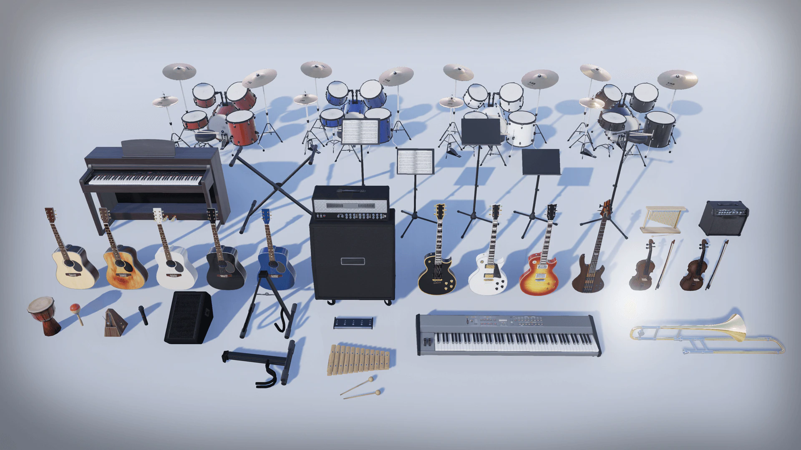
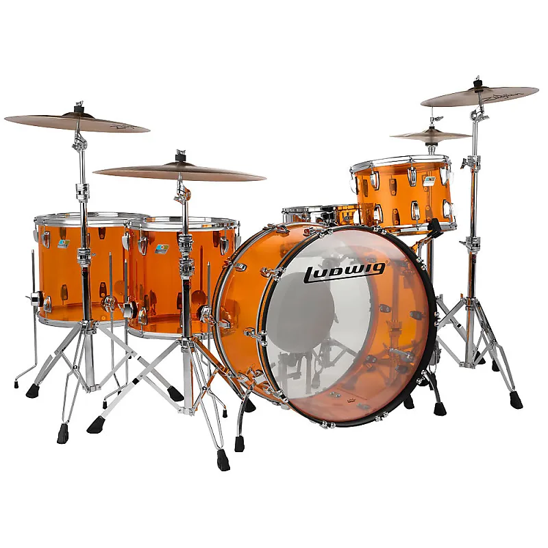
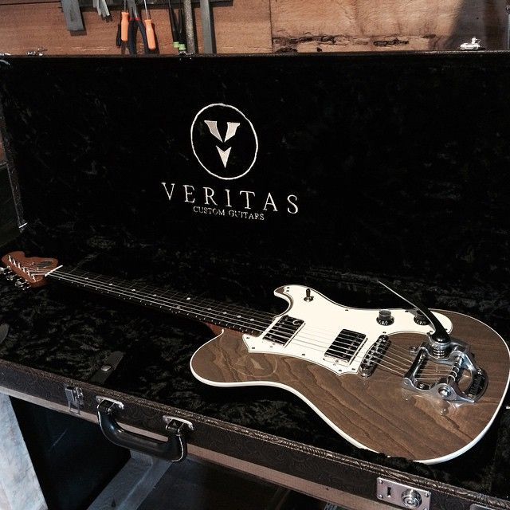
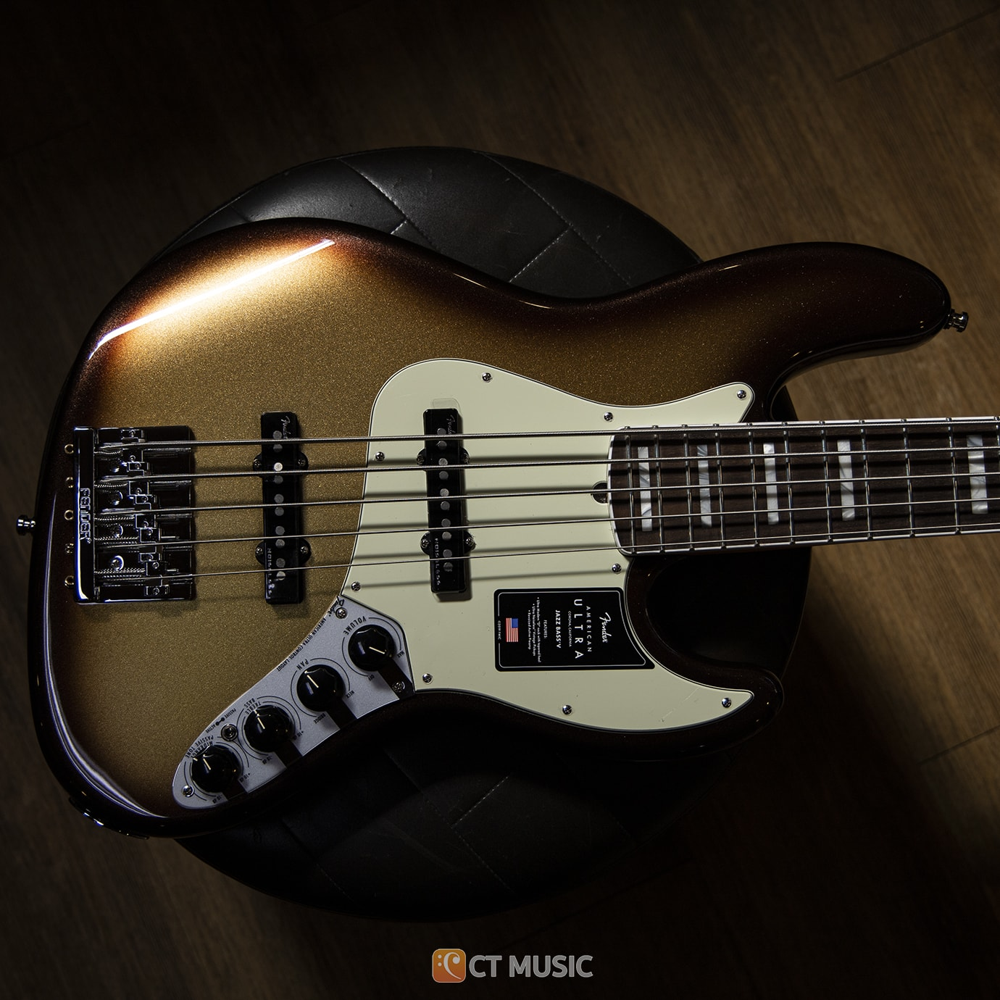

Instrumente muzicale

Aceasta pagina web ne prezinta unele dintre cele mai populare instrumente muzicale.
Instumente cu coarde
Instumente de percutie
Instumente de suflat
Nume
Imagine
Link spre wikipedia
Tobe

mai multe detalii
Chitara electrica

mai multe detalii
Chitara bass

mai multe detalii
Unele din beneficiile aduse de cantatul la un instrument
crestere in stima de sine
imbunatatirea abilitatilor cognitive
stimuleaza creativitatea individului